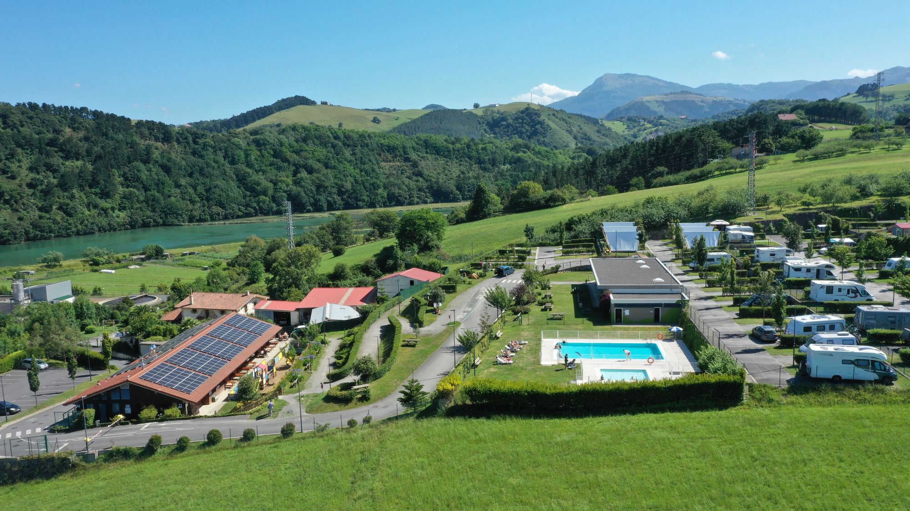
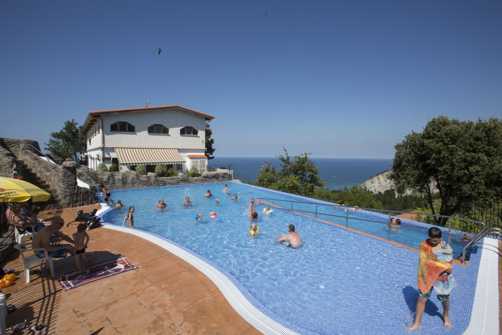
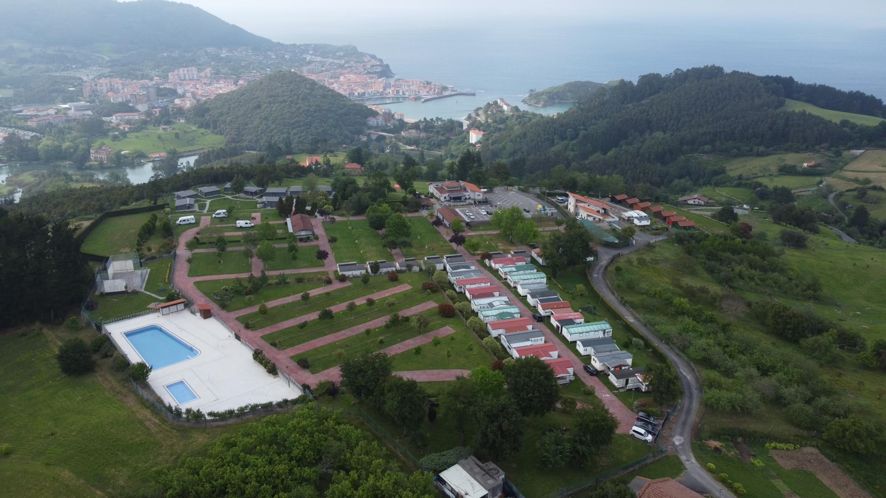
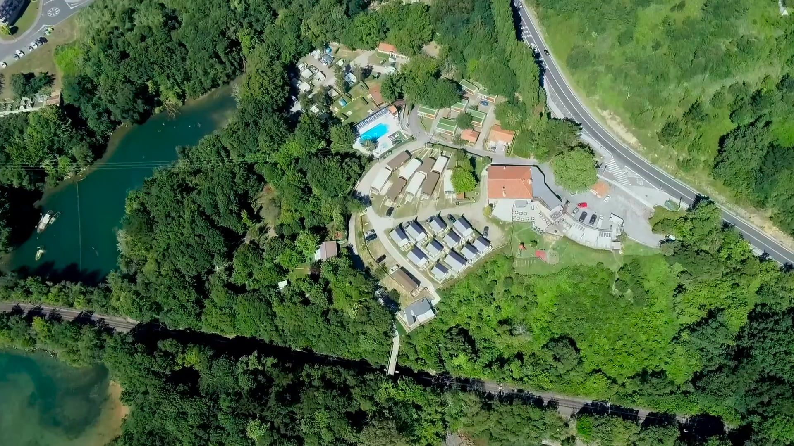
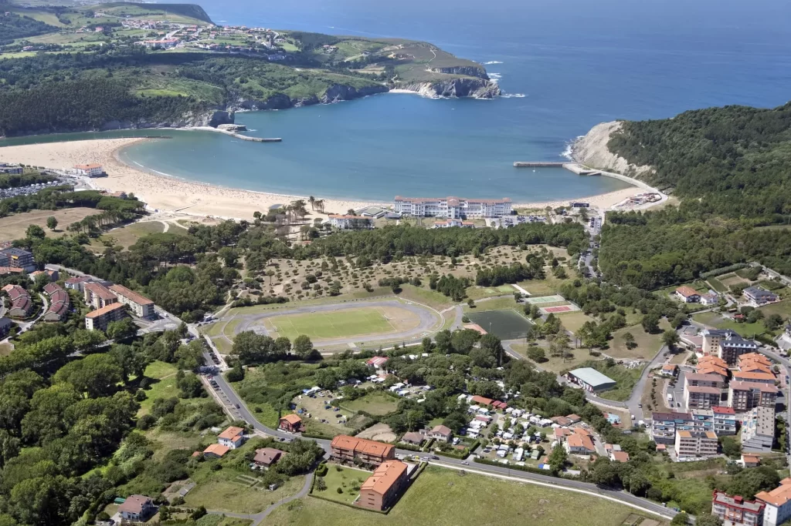

Explora el mapa real de la nostra aventura. Fes clic a les etapes per veure els enllaços a les rutes detallades.
Fes scroll lateral per descobrir els detalls de la nostra aventura.
On descansarem després de cada jornada en ruta.




